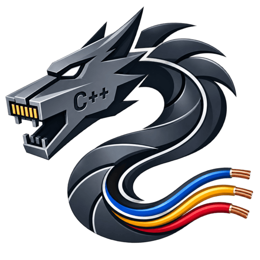

Dracon
A small, fast HTTP/HTTPS server for Linux.
Dracon is written from scratch in C++23 on top of epoll and
Boost.Coroutine2, with no Boost.Asio and no framework. The server itself only speaks
HTTP: every request is answered by a plugin, a shared library it
loads at start up.
Each connection runs inside its own coroutine, so a handler is written as plain sequential code while every read and write that would block yields back to the event loop. There is one event loop per hardware thread and the connections are spread across them, which is what lets a handful of threads carry a very large number of concurrent ones.
A plugin, in full
#include <dracon/http.h>
#include <dracon/plugin.h>
PLUGIN_EXPORT uint32_t plugin_order() { return 0; }
PLUGIN_EXPORT dracon::http_session create_session(const dracon::request &req)
{
if (req.url() != "/hello")
return {}; // not ours, the server asks the next plugin
return [](dracon::abstract_stream &stream, dracon::request &req) {
stream >> req; // read the rest of the request
stream << dracon::response{200, "hello\n"};
};
}Drop the resulting .so into the plugins directory and it is live on
the next start. The whole API is the header-only include/dracon/:
requests and responses, streams and chunked output, RESTful routing, and worker
threads for the slow work that must not block an event loop. It is written up in
the
documentation.
…and one with routes
For an API, restful.h does the URL matching. The handler is
the session, and the resources a route captures arrive as ordinary arguments in
the order it declares them, so one function can serve a whole family of routes and
the shorter ones hand over empty strings.
#include <dracon/plugin.h>
#include <dracon/restful.h>
dracon::restful_router router{"/api/v1/"};
static void customers(dracon::abstract_stream &stream, dracon::request &req,
const std::string &customer_id = {},
const std::string &license_id = {})
{
stream >> req;
stream << dracon::response{200, "customer " + customer_id +
", license " + license_id + "\n"};
}
PLUGIN_EXPORT bool init_plugin(const std::string &/*conf_dir*/)
{
for (const auto route : {"customers",
"customers/{customer_id}",
"customers/{customer_id}/licenses/{license_id}"})
router.create_route(route)->add_method_handler("GET", customers);
return true;
}
PLUGIN_EXPORT uint32_t plugin_order() { return 0; }
PLUGIN_EXPORT dracon::http_session create_session(const dracon::request &req)
{
return router.create_handler(req.url(), req.method());
}Which answers all three, filling in what each one captured:
- GET /api/v1/customers
- customer , license
- GET /api/v1/customers/42
- customer 42, license
- GET /api/v1/customers/42/licenses/7
- customer 42, license 7
Ask for const std::optional<std::string> & captures instead
and a route which does not have one hands over nullopt, which is worth
the change when “this route has no such resource” and “the resource
is empty” have to read differently:
static void orders(dracon::abstract_stream &stream, dracon::request &req,
const std::optional<std::string> &order_id = {})
{
stream >> req;
stream << dracon::response{200, order_id ? "order " + *order_id + "\n"
: "all orders\n"};
}An unknown method on a known route is answered with a 405 and the right
Allow header, without the handler being involved. Take a
dracon::parsed_route instead of the captures when the query strings or
the allowed methods are wanted too.
At a glance
- Language
- C++23, GCC ≥ 13 or Clang ≥ 17
- Built on
epoll, Boost.Coroutine2, OpenSSL- Platform
- Linux only, and unapologetically so
- Handlers
- Plugins loaded with
dlopenat start up - Concurrency
- One coroutine per connection, one event loop per thread
- License
- AGPL, with an exception so plugins may use any license
Installing
Debian packages build straight out of the tree: dracon-server for the
daemon, its systemd unit and the default configuration,
dracon-mod-staticcontent for the plugin serving this page, and
libdracon-dev for the headers you build your own against. A Certbot
plugin, python3-certbot-dracon, obtains and installs the certificate:
certbot run --configurator dracon -d example.com